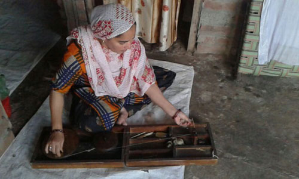
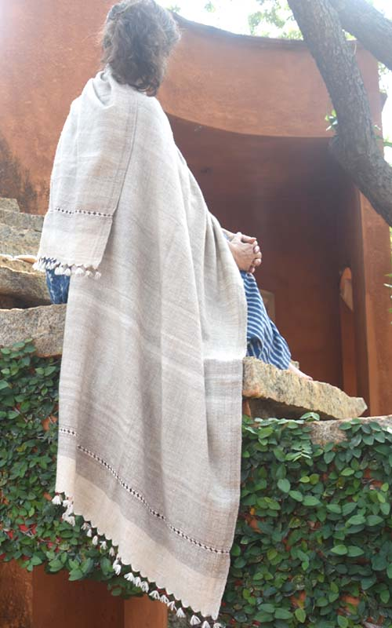

Thread PassportNo. 0187 / 2026

Spun byShabnam Devi9 days · Basohli
- WovenBishan Dass · 6 days · loom no. 4
- EmbroideredRekha Devi
- FibreChangthangi, Ladakh · 13.2µ
- DyeUndyed
- Film40 seconds on the loom ▸
Book care, repair or re-embroidery
khaddipashmina.com/p/0187
This is what opens when you tap the hem.
The page is built for ten seconds at a dinner table: a phone, a shawl, and the face of the person who made it. It loads in under a second and can be shared in one tap.
- Opens with the maker, not with us.
- Four names, and the days each spent on the piece.
- Fibre, micron count, dye and lab batch.
- A forty-second film of this piece on the loom.
- Care, repair and re-embroidery booking.
NFCA tag stitched under the hem label. Never glued or heat-pressed.
QRPrinted beside it, for phones that will not tap.
1 of 1Each tag is unique and cannot be copied onto another piece.
No appIt opens in the browser, for you or for anyone you show it to.

Built to open standards
A passport before it becomes a requirement.
The EU is bringing in a Digital Product Passport for textiles over the next few years. Ours already carries a permanent identifier and can be read by a machine as well as a person.
We made it so you could meet the spinner. The paperwork comes with it.